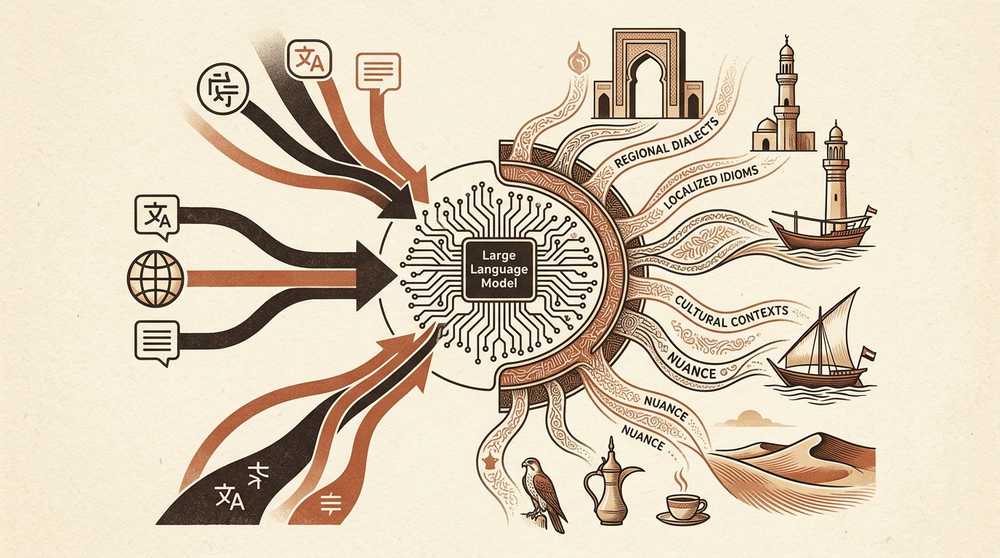

Adapting Large Language Models to Regional Dialects and Nuance
Standard large language models often struggle to capture regional dialects, localized idioms, and specific cultural contexts, as their training corpora are predominantly composed of standard forms of major global languages. The release of Falcon-Emirati by the Technology Innovation Institute (TII) addresses this limitation by tailoring a model specifically to the linguistic and cultural characteristics of the United Arab Emirates.
Tailoring models to regional dialects enables more accurate performance in localized applications, including regional customer communication, civic services, and domain-specific text generation. By training directly on nuanced local data, models like Falcon-Emirati offer improved comprehension of context and local syntax that generic foundation models typically miss.
- Falcon-Emirati: When an LLM Learns the Dialect, the Culture, and the Nuance: A blog post detailing the development of a specialized language model trained to understand the regional dialect, cultural context, and linguistic nuances of the UAE.
Original feed: Hugging Face Blog